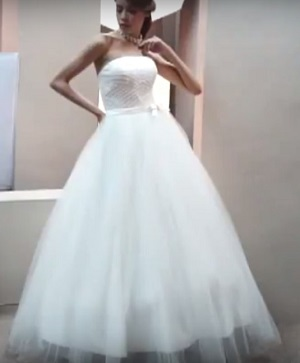

Каждая девушка с самого детства мечтает хотя бы на время стать принцессой. Свадьба - отличный повод осуществить мечты и почувствовать себя королевской особой. Свадебные платья в пол давным-давно заняли особое место в мире моды. Недаром именно их принято считать признаком элегантности и утонченности, ведь они могут быть как прямыми, так и достаточно объемными. Благодаря данному разнообразию они могут стать подходящим вариантом для церемоний бракосочетания разных стилей.
Чем проще, тем лучше.
Любительницам простых, не перегруженных декором нарядов отлично подойдут свадебные платья в пол прямого покроя. Образ в данном случае дополняют незамысловатые драпировки и элегантные украшения. Излишние детали полностью отсутствуют и на первый план выходит естественная красота невесты. Подобный наряд прекрасно подойдет для неофициальной, так называемой "банкетной" части мероприятия.
Классика, проверенная временем.
Классическую церемонию, для которой выбран романтический стиль, невозможно представить без невесты, облаченной в кружевное одеяние. В данном случае чем длиннее подол, тем "нежнее" образ девушки. В данном случае очень важную роль играют выбранные ткани. Дорогой материал и богатый декор выигрышно дополнят образ. Пожалуй, лучше всего зарекомендовали себя со временем кружевные наряды с открытой спиной и внушительным бантом на спинке в пол.
Стройным невестам на заметку: Модели с баской очень выигрышно дополняют образ и подчеркивают достоинства фигуры!
Ненавязчивая экзотика.
Отдельного внимания заслуживают наряды в пол, выполненные в греческом стиле или, так называемом стиле, Ампир. Изначально стильные француженки ввели моду на данный фасон. Сейчас подобные наряды сводят с ума невест по всему миру. Модель в стиле ампир имеет ряд характерных особенностей. Завышенная талия, полуоткрытая грудь и обнаженные плечи не первый год сводят с ума мужское население планеты. Данный фасон идеально подходит для летней свадьбы.
"Русалочка"
Далее по списку "Русалка" или "Рыбка". Отличительные черты - заниженная талия и прямой силуэт, который значительно расширяется к полу. Осторожно! Одежды данного фасона очень плотно облегают фигуру и подчеркивают все недостатки, потому на "Рыбку" лучше обращать внимание девушкам худощавым или даже откровенно анорексичным.